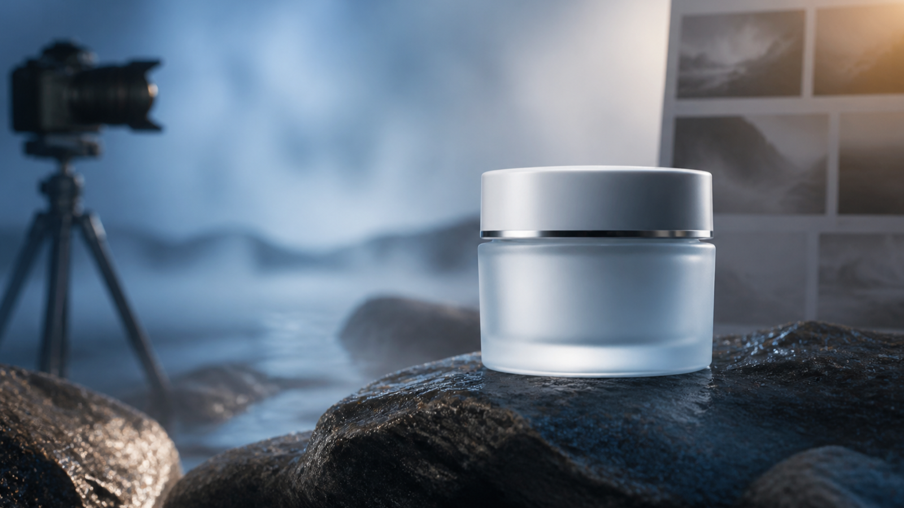

MiniMax H3 Product Launch Videos: 7 Honest Clips for Founders
A MiniMax H3 product launch video does not need to explain an entire product. It needs to make one useful promise visible, then stop before the clip invents evidence the product cannot support.
For a founder working without a production team, that usually means choosing a narrow job for each shot: establish the problem, show the product in context, reveal one physical detail, or leave a clean frame for a verified claim. The workflow below turns those decisions into seven short clips that can be reviewed before they become campaign material.

Decide what the MiniMax H3 clip must do
Start with the placement, not the visual effect. A homepage hero, launch post, product page and paid social ad ask for different evidence.
| Placement | The clip’s job | What must stay honest |
|---|---|---|
| Homepage hero | Establish mood and category | Product silhouette and approved positioning |
| Launch post | Make the new idea understandable | What is actually new and available |
| Product page | Clarify material, scale or use | Packaging, accessories and physical behavior |
| Social teaser | Earn attention with one action | No fabricated review, result or customer story |
| Demo transition | Move from problem to proof | The proof must come from the real product |
This table prevents a common failure: asking one eight-second clip to carry atmosphere, product education, social proof and a call to action at the same time.
Seven MiniMax H3 clips worth putting on a founder’s shot list
1. The MiniMax H3 material reveal
Begin close on one verified surface—glass, fabric, metal or condensation—then pull back to the full product. This is useful when finish and tactility matter more than a feature list.
Review: Does the material still behave like the real one? Did the object change shape during the reveal?
2. The everyday context
Place the product in one believable moment: earbuds beside a commuter’s bag, a kitchen tool on a prep surface, or a small device on a crowded desk. Context communicates size and purpose without a paragraph of copy.
Review: Does the scene imply a use the product actually supports?
3. The problem frame
Show the situation before the product appears: tangled cables, scattered project notes or a dim workbench. End before the “solution” becomes an exaggerated transformation.
Review: Is the problem real for the target user, or merely dramatic?
4. The controlled transformation
Use light, ingredients or broad components to assemble a conceptual product silhouette. Keep it clearly metaphorical. Do not expose imaginary internal hardware or present the animation as engineering documentation.
Review: Could a viewer mistake the concept for a technical claim?
5. The detail answer
Build a clip around one question buyers repeatedly ask: how a lid opens, how thick a material looks, where a connector sits, or how an object fits in a hand. Exact labels belong in post-production.
Review: Compare the critical frame against an approved product photograph.
6. The campaign variation
Keep the product, camera and action fixed while changing only the background, light or seasonal props. This creates a fair creative test because the main idea stays constant.
Review: Did the variation introduce a discount, date or accessory that was never approved?
7. The clean MiniMax H3 final hold
Finish on a stable three-quarter view with negative space for a headline. Add the logo, price, release date and legal copy in an editor, where they can be checked and updated.
Review: Is the product still and readable long enough for the placement?
A 30-minute preparation pass
The useful work happens before generation. A short preparation pass can be divided like this:
Minutes 0–5: write one promise. Describe what the viewer should understand after the clip. Avoid adjectives that do not change the shot.
Minutes 5–10: list fixed details. Record product form, color, material, approved accessories and anything the model must not add.
Minutes 10–15: choose a beginning and end. A readable shot has a starting state, one action and a stable destination.
Minutes 15–20: choose the camera. Use one movement: push in, pull back, small orbit or fixed frame. Combining several moves makes failures harder to diagnose.
Minutes 20–25: reserve copy space. Decide where verified text will be added later. Do not ask a generator to typeset launch claims.
Minutes 25–30: define rejection reasons. Write down what would make the clip unusable: wrong label, altered port, extra accessory, impossible result or false customer context.
Where MiniMax H3 fits
MiniMax documents H3 as a multimodal video model that accepts text, image, video and audio inputs. Its current official specification lists 768P or 2K output and integer durations from 4 to 15 seconds. That makes MiniMax H3 suitable for short concept shots, but the specification does not certify product accuracy.
A practical prompt describes relationships instead of stacking style words:
8 seconds, 16:9. A frosted pale-green skincare jar sits on a dark wet stone surface in a quiet greenhouse at dawn. A soft ribbon of mist moves behind the jar while the camera makes one slow push from medium close-up to a stable three-quarter view. Keep the jar shape, color and proportions consistent with the reference. Leave clean space on the left. Generate no readable packaging text or added components.
Treat that prompt as a test definition. If the jar changes, reduce the action or strengthen the reference; if the camera wanders, remove secondary movement; if the label is wrong, generate a clean plate and add the approved artwork later.
The “do not fake the product” check
Before a clip enters the launch folder, review it frame by frame:
- Does the product keep the same silhouette, material and color?
- Are every port, button, closure and accessory real?
- Does the action imply an unsupported performance or health result?
- Is a generated person being presented as a real customer or reviewer?
- Are logos, labels, prices and dates added from approved source files?
- Can the final claim be traced to the current product or release notes?
If any answer is uncertain, the clip stays a concept. That is not wasted work; it is exactly what previsualization is for.
What would you show first with MiniMax H3?
For a small launch with MiniMax H3, I would choose one context shot, one detail answer and one clean final hold before generating seven polished variations. Those three clips cover attention, understanding and a controlled ending without pretending the video is the product proof.
Which shot would reduce the most uncertainty for your next launch: context, detail, or a real product demo?
To turn that first shot into a test, creators can compare the third-party Best Image AI – Affordable MiniMax H3 API route. This is not an official MiniMax endpoint, and via=shixi88 is a tracking parameter. “Affordable” is part of the link label, not a verified lowest-price claim; recheck access, controls and terms before use.
References
- MiniMax H3 video generation documentation — checked August 24, 2026.
AI assistance and link disclosure: This local published copy was prepared with AI assistance and fact-checked against the MiniMax documentation on August 24, 2026. It includes one disclosed link to the third-party Best Image AI service with the tracking parameter via=shixi88; no price or lowest-cost claim has been independently verified.
Suggested tags: product launch, video, AI, bootstrapping, marketing